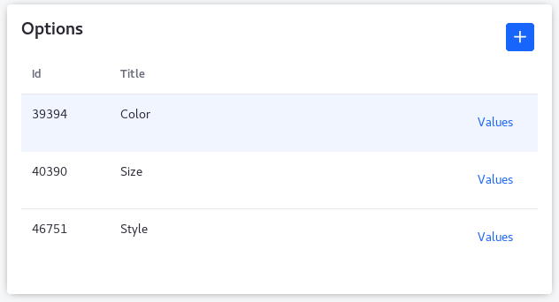
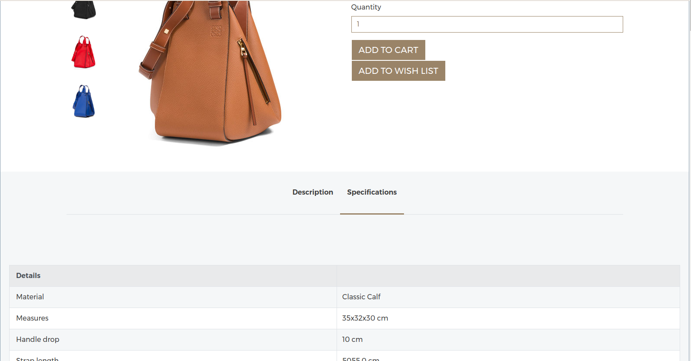

The commerce catalog is at the heart of any webstore, providing the store’s core content and organizing the metadata that will help create an engaging shopping experience.
To populate your catalog, go to the Site Menu and click on Commerce → Catalog. This takes you to the Products tab of the Catalog page, with additional tabs for Options, Option Categories and Specifications.
Here you can see the contents of your catalog. Besides options to search, sort and filter the catalog, you can add products manually by clicking on the Add button ( ) button at the bottom of the screen.
) button at the bottom of the screen.
Here you can specify customer-selectable options for your products. To create a new option, click the Add button( ) at the top of the screen and fill in the fields on the right.
) at the top of the screen and fill in the fields on the right.
-Title: specify the type of option customers will select, such as size or
color.
-Description: *I'm not sure where the text entered here would be displayed*
-Field Type: Select from a number of different ways to display options to
customers (drop-down menu, radio buttons, etc).
-Facetable: *not sure what this is*
-Required: Selecting this box forces customers to make a selection before adding
items that deploy this option to their carts.
-SKU Contributer: Making an option an SKU (stock-keeping-unit) contributor,
gives each item that deploys the option a separate SKU for each of that option's
values. This allows you to set different prices, shipping rates and other
settings depending on what size, color or other selections a customer makes.
-Key: A unique identifier for referring to this option programmatically. As this
field is filled automatically, most users can safely leave it alone.
Once an option has been created, it is displayed in the list on the left side of the screen. But it cannot be seen by customers unless it has values assigned to it and has been deployed to a product.
There are two ways to assign values to a product. One is from the options tab in Site Menu → Commerce → Catalog:

Click on the Values button and when the pop-up box appears, click on the Add button at the top of the Option Values section. Then in the Option Value Detail section, fill in the Title and Priority fields and hit Save.

The contents of the Priority field simply establish the order in which the option values will be displayed on the product page. The Key field, again, is auto-filled so most users can leave it alone.
The method of assigning values to options given on this page is Catalog-wide. Once you’ve assigned a set of values to an option, you’ve created a template for every product that subsequently deploys that option. If you’re running a shoe store, it may suit you to have a size option that imposes the values 1, 2, 3, etc. on all of your products. But what if you also want to sell T-shirts, which would need size values of small, medium and large? For that use case, you’ll want to look at assigning option values to products individually [insert link to site that doesn’t exist yet].
Specifications provide information about the product that is not user selectable. Creating a specification category allows those specifications to be listed together on a products page.

Figure x: This product’s specifications are all grouped into a single category, Details.
Other use cases might call for more Specification Categories. For instance, a purveyor of personal computers might want to have one category for hardware configuration and another for software.